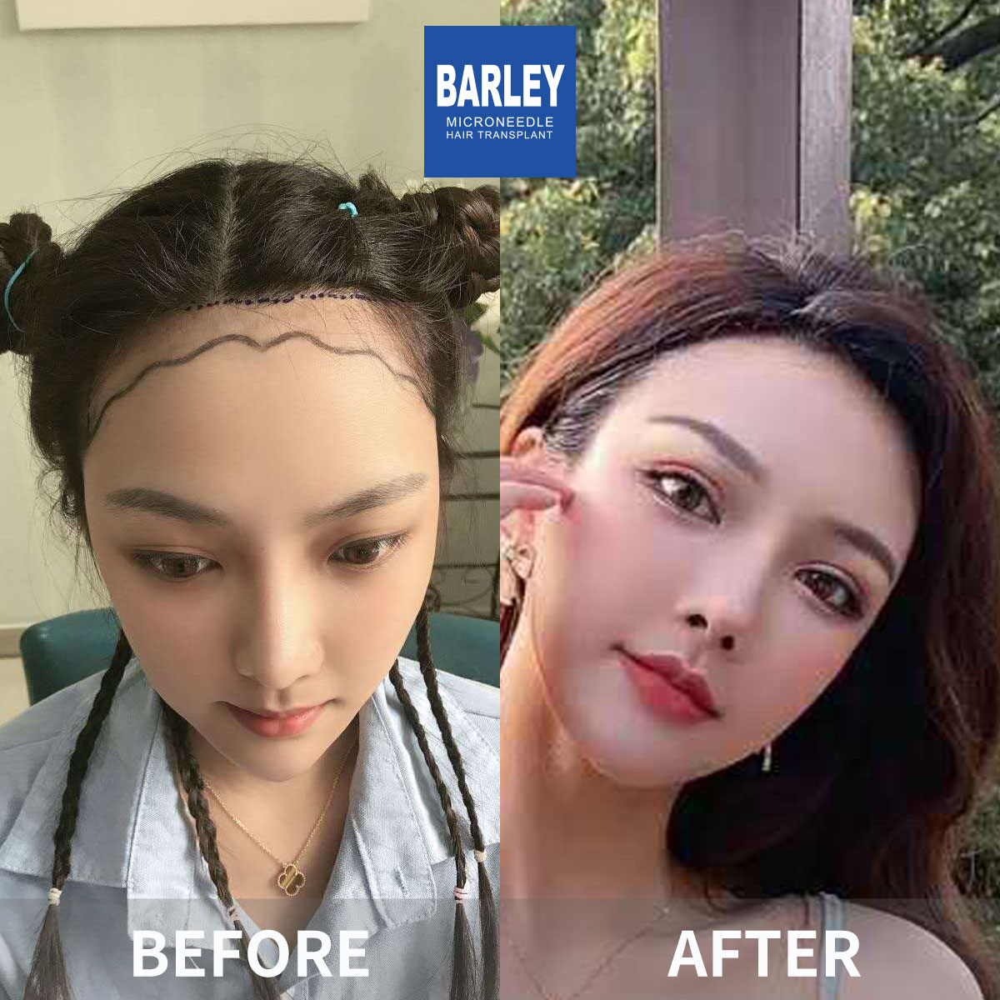
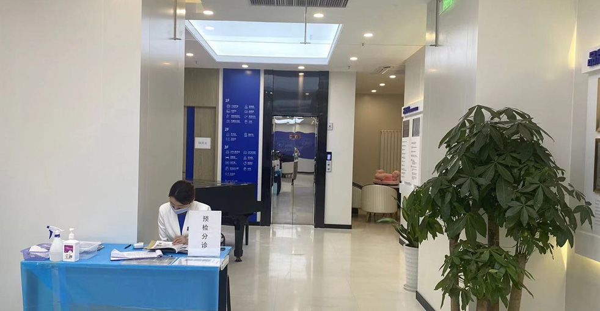

Discover our full range of hair restoration treatments
Bespoke hairline sculpting for authentic-looking results that harmonize with your facial structure and bring back a younger appearance using our state-of-the-art microneedle technology.
Enhance volume through precise microneedle implantation that enables superior density positioning while preserving organic growth patterns for fuller, denser hair.
Complete coverage for all levels of crown and vertex hair loss using our proprietary microneedle system for authentic-looking restoration.
Organic-looking eyebrow enhancement with meticulous positioning that thoughtfully crafts and places eyebrows to complement your facial aesthetics for fullness and definition.
Achieve the ideal beard or mustache through artistic follicle placement that addresses sparse patches and delivers a complete, masculine appearance that enhances your features.
Rebuild or improve your sideburns with accurate positioning that generates natural-looking density and form, beautifully framing your face.
Body hair procedures for multiple regions with careful positioning that guarantees organic growth patterns and density for the most genuine appearance.
Complete therapies for hair loss featuring medical solutions, PRP sessions, and scalp wellness programs to halt further loss and stimulate healthy regrowth.
Expert hair wellness for vibrant hair including customized scalp therapies, nourishment programs, and maintenance plans to sustain lasting hair vitality.
Complete hair restoration solutions adapted to your needs

Bespoke hairline design and placement for authentic-looking outcomes. Our skilled practitioners utilize cutting-edge microneedle methods to craft a tailored hairline that harmonizes with your facial proportions and delivers a refreshed, younger appearance. We thoughtfully craft the hairline based on your age, face ratios, and individual preferences.

Boost volume in thinning regions through precise microneedle placement. Our cutting-edge method enables superior density positioning while maintaining organic growth patterns, delivering fuller, denser hair. This treatment is perfect for individuals experiencing scattered thinning or seeking to add volume to specific zones.

Complete restoration for crown and vertex hair loss. We provide comprehensive solutions for all degrees of hair loss, from early thinning to advanced baldness, utilizing our proprietary microneedle system. Our method is customized to your specific level of baldness and available donor hair.

Authentic-looking eyebrow enhancement with accurate positioning. Our experts carefully craft and place eyebrows that align with your facial aesthetics, delivering fullness and definition. We focus on eyebrow shape, arch, and direction for the most genuine results.

Achieve the ideal beard or mustache through creative follicle placement. Whether you want to address sparse patches or develop a complete, masculine beard, our skilled practitioners can help you reach your desired appearance. We specialize in organic-looking facial hair restoration that enhances your features.

Complete therapies for various types of hair loss conditions. We provide a range of non-surgical treatments featuring medical solutions, PRP, and scalp wellness to help prevent further loss and stimulate healthy regrowth. Our medical approach is customized to your specific hair loss pattern and requirements.
See the impressive results our patients have achieved with our treatments



Real moments with our satisfied patients after their procedures

Posing with our medical staff after successful procedure

Celebrating wonderful outcomes with our physicians

Another pleased client shares their happiness

Client with our specialist before discharge

Delighted client with our expert post-treatment

Enthusiastic client presenting their refreshed look

Client delighted with their makeover

Client embarking anew with fantastic outcomes
Hear from our satisfied patients around the world
"I booked the no-shave FUE service because I didn't want colleagues at my law firm to notice I'd had work done. I'm honestly blown away — they extracted follicles between my existing hair strands without shaving anything, and I was back in court three days later. Nobody suspected a thing. The new hairline density is perfect for my age, and the direction matches my natural growth exactly."
"I went in specifically for the microneedle eyebrow transplant after years of filling them in every morning. The surgeon spent twenty minutes just sketching the shape on my face, adjusting it again and again until I loved it. I'm nine months out now, and the brows grow in the exact arch she designed. I don't own brow makeup anymore. It's genuinely changed my morning routine."
"The FUE baldness restoration service covered my entire crown over two sessions. I was a Norwood 6 before, basically fully bald on top. The team staged the grafts intelligently — hairline first, then the crown three months later. Fourteen months after my second session, I have a full head of styled hair. My teenage daughter didn't even recognize me in a recent photo; she thought I was thirty again."
"I got the beard transplant service to fill in two stubborn patchy areas on my jawline that never grew in my twenties. The clinic matched the coarseness and curl pattern perfectly using scalp donor hairs from the nape of my neck. I can shave now without those weird bald patches showing through. My barber actually asked me what skincare product I was using because my facial hair looked so much fuller."
"I chose the combined PRP plus microneedle thickening service because my hair was diffusely thin all over rather than bald in spots. The PRP injections stung a little on the first session, but the numbing cream made the next three visits totally comfortable. Six months in, my ponytail is noticeably thicker — I measured the circumference with a tape measure, and it's up almost a full centimeter. Worth every penny."
"The sideburns transplant service was exactly what I needed to connect my beard properly to my hairline. I'd always had these weird gaps right in front of my ears that made it impossible to grow a connected beard. The doctor placed each follicle at the precise angle so they sweep downward exactly like natural sideburns. Now I can finally grow the full lumberjack style I've always wanted and it looks 100% authentic."
Experience our modern and comfortable facilities

Our state-of-the-art facility

Relax in our premium lounge

Sterile and advanced

Private and professional

Comfortable post-op space

Welcoming entrance
Discover answers to frequently asked questions by our patients
Click to copy contact information
15810155700
+86 13730143529
hairtransplant@qq.com

Everyone's hair loss journey and solution are unique due to a variety of factors. Our hair restoration experts will assist you in determining the root cause and the best solution for your hair restoration plan. If you have any questions, please ask; we are happy to assist.